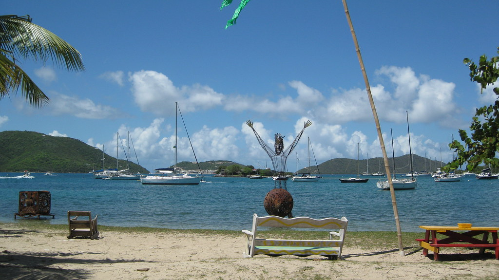

Trellis Bay Full Moon Party
The full moon lands on Tuesday, April 20 — right in the middle of our week. Trellis Bay on Beef Island throws the BVI's most famous full-moon bash: Aragorn's giant steel fireball sculptures burning out in the water, Moko Jumbie stilt dancers, live calypso, and barbecue along the beach. The sculptures burn in the water right off the anchorage — so we can dinghy in for the music and barbecue, then watch the fires from our own deck with a nightcap. No taxis, no cover, thirty-second ride home. Aragorn's own studio is right on the beach (open late on party night) — copper sculptures, pottery, and local crafts; the one real souvenir stop of the trip.